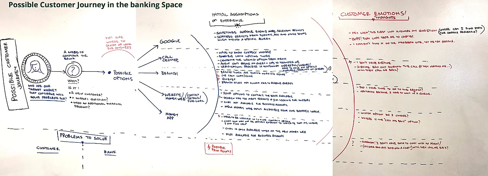
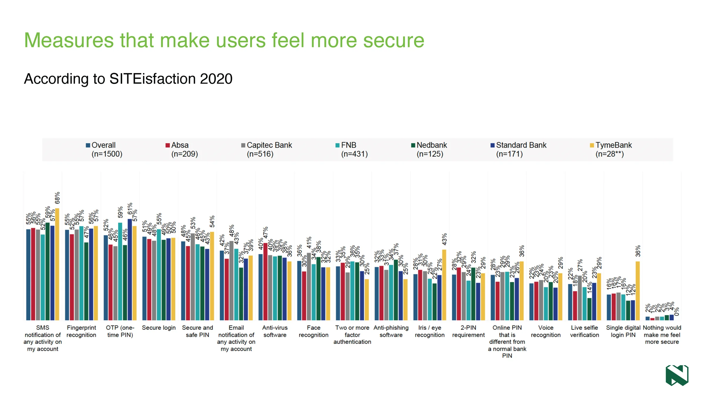
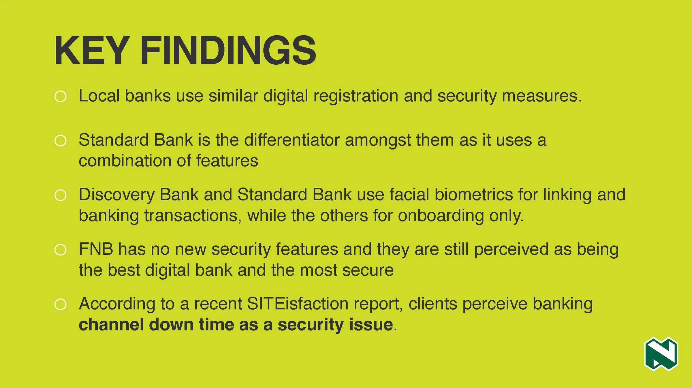
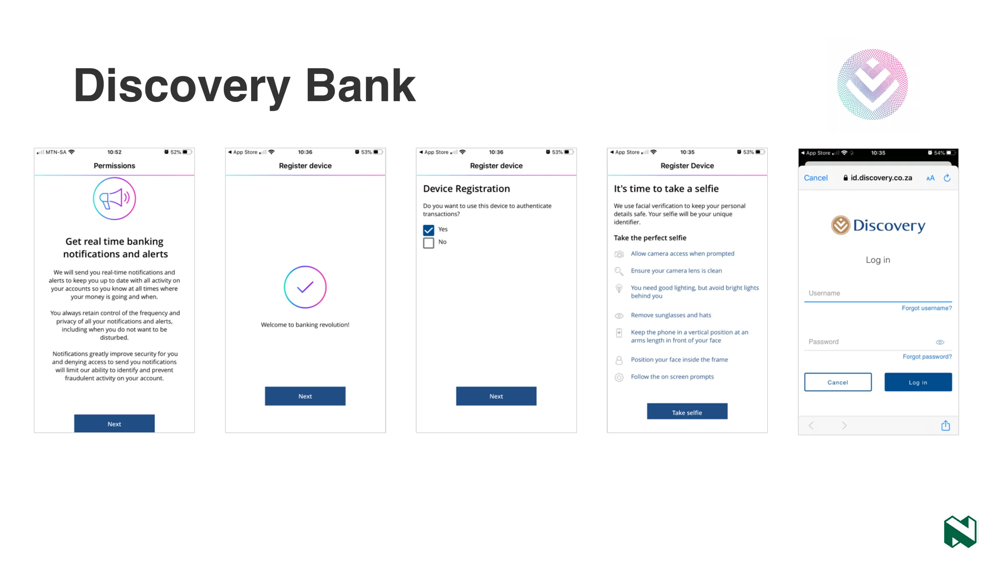
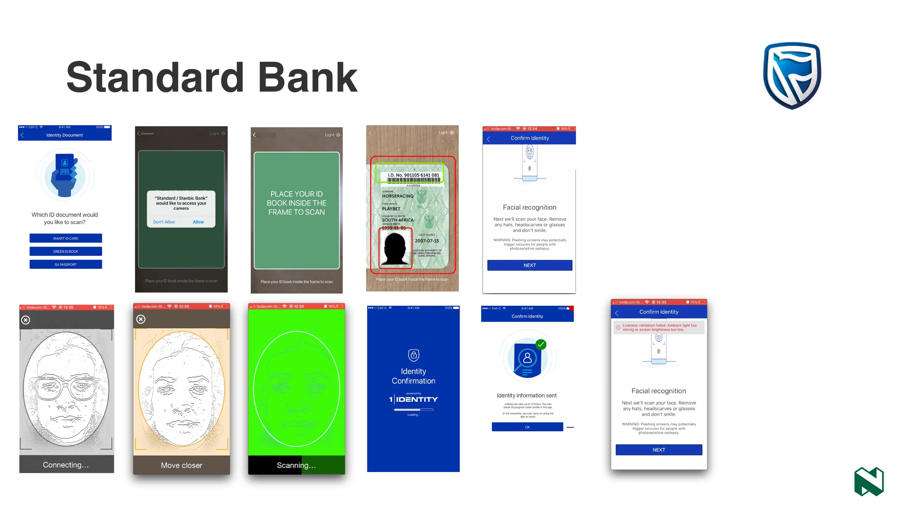
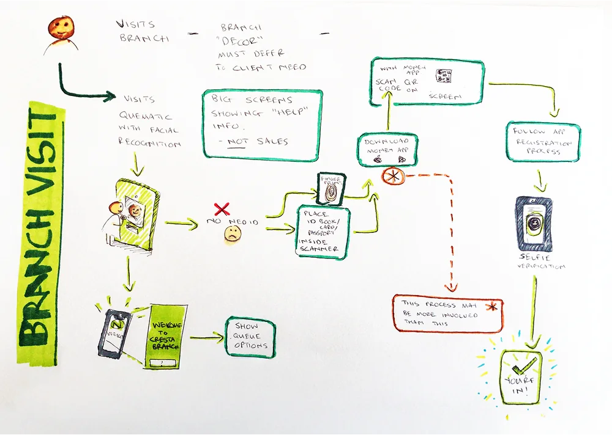
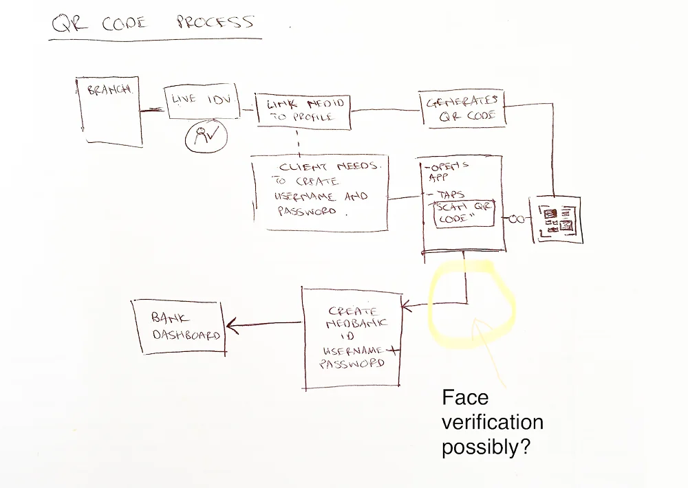
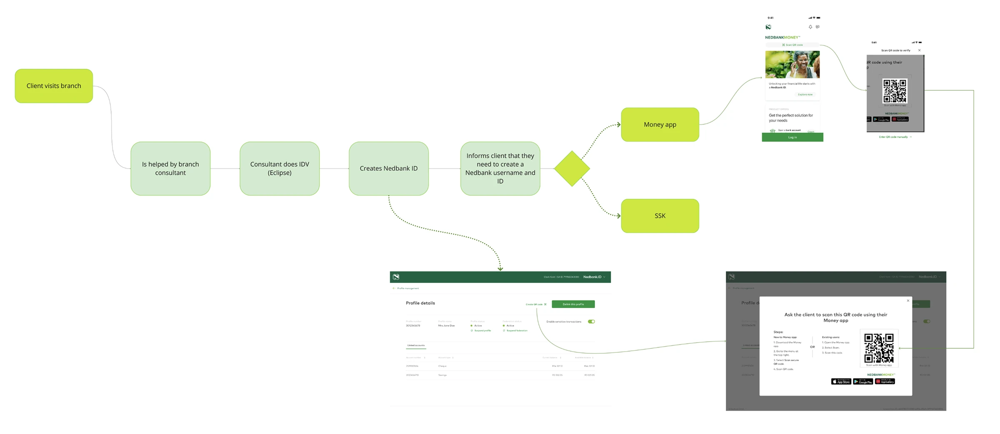

Overview

New Nedbank customers were giving up on digital sign-up partway through and walking into a branch instead. I was the senior UX/product designer on the onboarding work, alongside a design lead and a product owner, on products serving more than 2 million active users. The research turned up the root cause: the live KYC checks were stricter than the bank's own anti-fraud rules required. Bringing them back in line cut new sign-up drop-off by 25–35%, without weakening security.
The app asked for more than the rules did
The live KYC checks in sign-up went further than the bank's own anti-fraud rules asked for. Each extra check was one more place for a genuine customer to get stuck, usually with no clear feedback on what went wrong. Matching the checks to the rules took those dead ends out, and the protection the rules were written for stayed in place.
One map gave every stakeholder group the same picture
I went straight to the source: customers, and the branch staff who picked up the pieces when sign-up failed. I mapped the real paths people took, including every detour from the app into a branch, and used those maps with the business stakeholder groups. The maps gave each group the same picture of where the digital journey broke and sent people to a branch.

An early whiteboard map: a customer who needs help tries Google, the call centre, a branch, the website and the app, and hits a wall at each one. The red notes are what they were thinking, like "Oops! That link took me to Capitec" and "I don't have airtime".
Unclear feedback sent people to the branch
My research reports pulled together what customers and staff were struggling with. When digital sign-up didn't give clear, real-time feedback, people abandoned it and went to a branch. That loaded up branch staff and pushed processing costs up. Customers said there were too many steps, and some weren't sure the app was safe, yet felt they had to trust it anyway.

From the SITEisfaction 2020 research: too many steps on one side, doubts about security on the other. Both pushed people away from the app.
Customers trusted signals they could see
The SITEisfaction 2020 survey asked customers what made them feel secure. Simple, visible signals came out on top, like SMS alerts and fingerprint login. Heavier steps like live selfie verification ranked much lower. When I looked across the local banks, their registration and security steps were much the same, and customers even read app downtime as a security problem.


Left: SMS alerts and fingerprint login topped what made customers feel secure (55% each overall), while live selfie verification sat at 22%. Right: every local bank used similar sign-up and security steps.
I also walked through the two banks already using facial biometrics. Discovery's flow was quick, but buried people in text and a long list of selfie instructions. Standard Bank checked the ID number, the ID document and a selfie, yet its face scan struggled in bright light and linking could take up to 12 hours.


Left: Discovery Bank's device registration and selfie steps. Right: Standard Bank's ID scan and facial recognition, from the 2020 CX report.
A branch visit should send people back to the app
Some customers will always end up in a branch. So I sketched what that visit should do for them: check their identity once, in person, then hand them to the Money app with a QR code so they leave fully set up. The sketches still had open questions, like whether to add face verification at the QR step. The mapped flow shows where it landed.


Left: the branch visit sketch, ending in "You're in!" on the customer's own phone. Right: the QR handoff, with face verification still a question mark.

The branch path mapped end to end: the consultant checks ID, creates a Nedbank ID, then a QR code hands the customer to the Money app or a self-service kiosk.
Static personas couldn't cover two million customers
Nedbank's customer base was too big and too varied for a few static personas. We built dynamic archetypes instead, based on digital literacy and onboarding intent. People move between them depending on how they're routed and helped, so a Digital Demander can become a Damsel-in-Distress when a step fails. Product teams used them to fit screens to how people actually behave.
Read the short case study: Customer archetypes that move

The archetype spectrum. Digital Demanders and Human Dependents are starting mindsets; most people move between the four core archetypes in the middle.
Fewer people dropped out, and security held
Matching the live checks to the anti-fraud rules cut new sign-up drop-off by 25–35%, without weakening security, on products serving more than 2 million active users. Several design and product teams adopted my research reports and the archetypes to guide their own onboarding work.